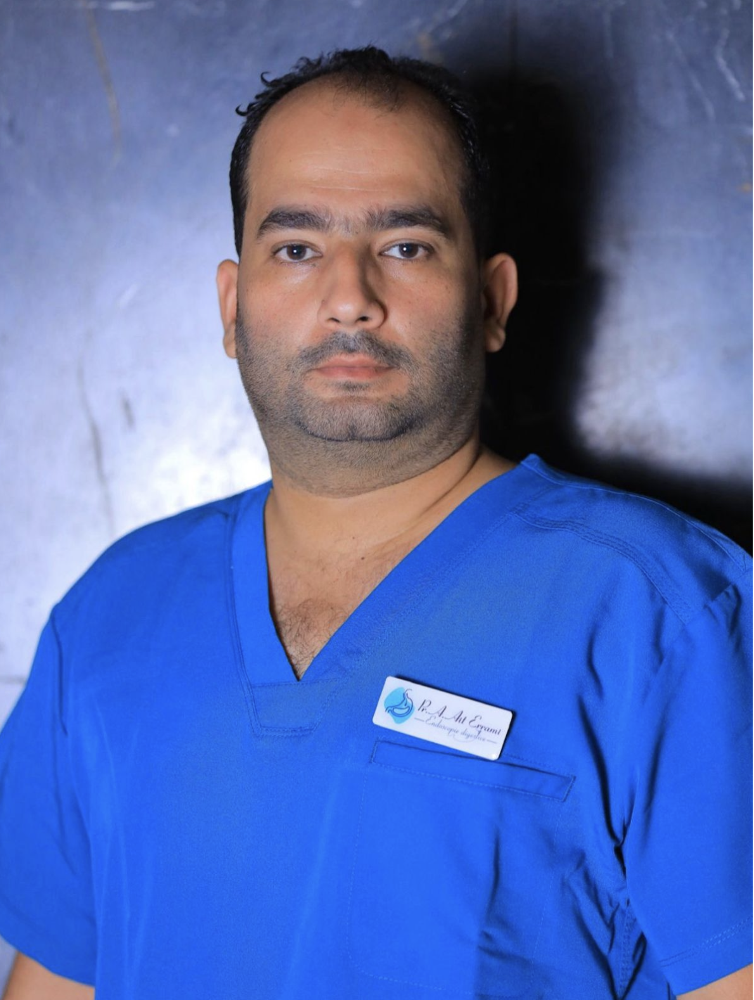
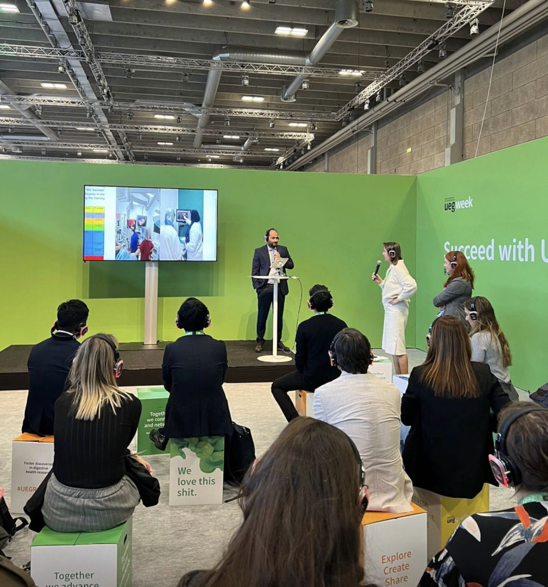
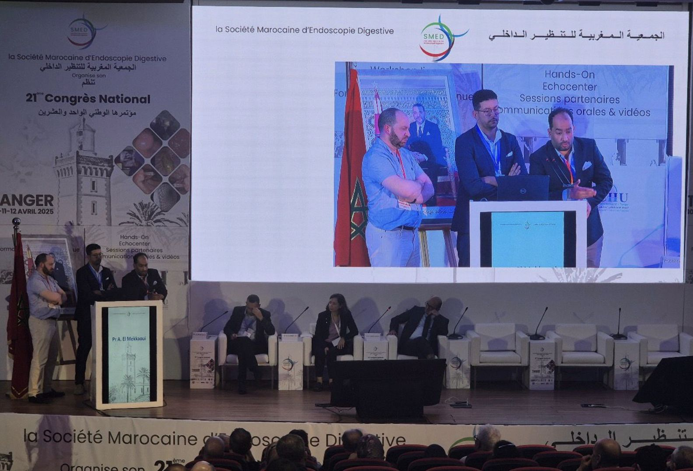
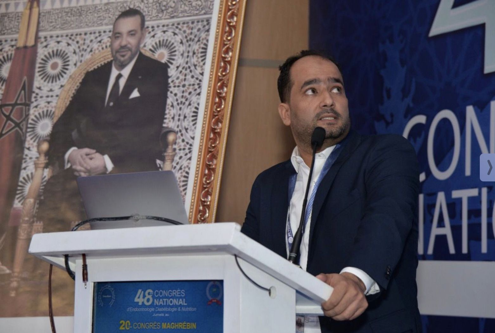
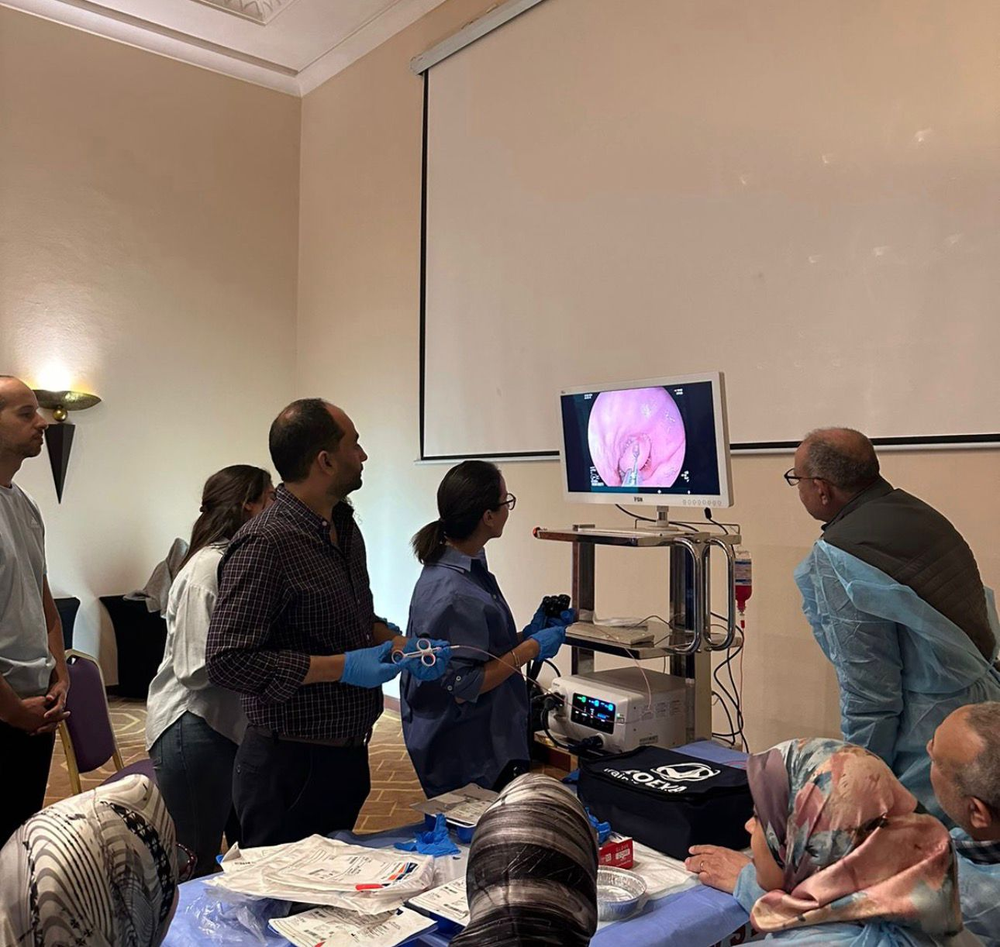
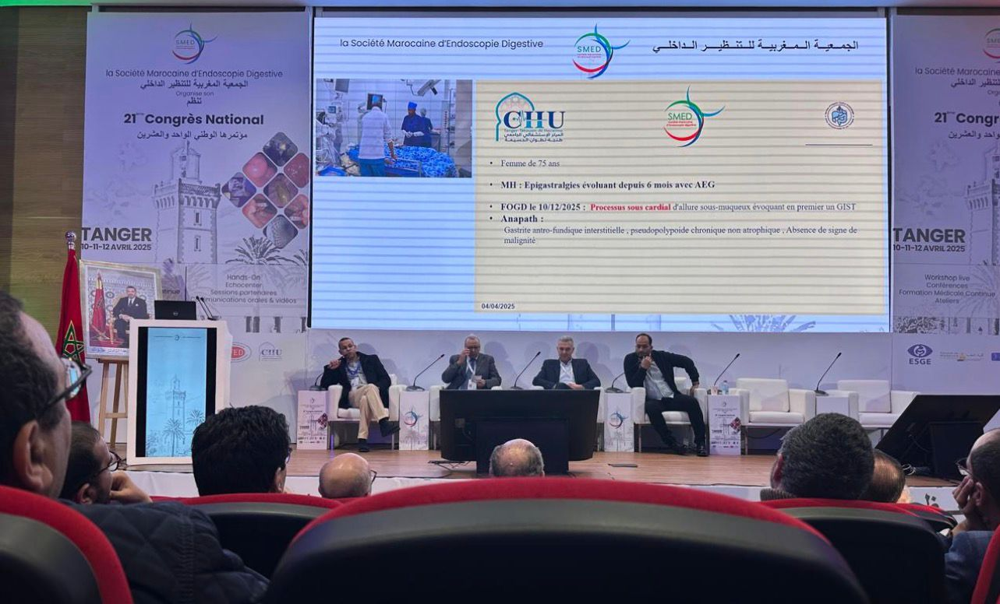
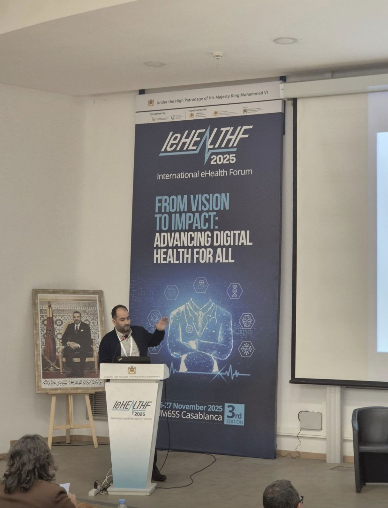

Professeur · Gastro-Entérologue
Endoscopie Interventionnelle · Hépatologie · Oncologie Digestive
Pr. Adil Ait Errami
Gastro-entérologue spécialisé en endoscopie interventionnelle, hépatologie et oncologie digestive.
Parcours clinique, pédagogique et de recherche reconnu à l'échelle nationale et internationale. Formation avancée effectuée en Europe, en Turquie, en Égypte et en Inde. Passionné par l'enseignement basé sur la simulation médicale.
Membre du Conseil d'Administration de la Société Marocaine d'Endoscopie Digestive et du Groupe des Jeunes Endoscopistes de l'Association Européenne d'Endoscopie Digestive (EAGE).
Hôpital Universitaire Public
Consultation & Endoscopie en Secteur Privé
Enseignement Universitaire
Université Cadi Ayyad, Marrakech
Très honorable avec félicitations du juryUniversité Cadi Ayyad, Marrakech
Université de Lille, France
Université Mohammed VI des Sciences de la Santé (UM6SS)
CHU El Kasr El Ayni, Le Caire
Hôpital Midas, Nagpur, Inde
Hôpital Beaujon, Paris – 2023
HIKMA CENTER – 2024
Université du Caire – 2019, 2023, 2024
CHU d'Izmir – 2023
Midas Hospital – 2024
Découvrez les gestes techniques réalisés par le Pr. Ait Errami en endoscopie interventionnelle.
World Journal of Gastrointestinal Endoscopy — Novembre 2024
Congrès Européen de Gastroentérologie, Copenhague — 2023
United European Gastroenterology Journal — 2021;9
Livre publié en 2023
2023
Expert en ERCP, EUS, EMR et gestes endoscopiques diagnostiques & thérapeutiques avancés.
Expertise avancée en hépatologie, maladies du foie et oncologie digestive.
Professeur universitaire passionné par la simulation médicale et l'innovation pédagogique.
Coordination d'équipes pluridisciplinaires et gestion d'unités hospitalières.
Maîtrise de la recherche clinique, de la rédaction scientifique et de la collaboration internationale.
Développement d'applications mobiles pour la gastro-entérologie et l'aide à la pratique médicale.
Congrès, ateliers pratiques et présentations scientifiques






Les réponses aux questions les plus posées sur les consultations, examens et pathologies digestives.
Vous pouvez contacter le Pr. Adil Ait Errami au +212 663 627 258 ou par email à a.aiterrami@uca.ma. Il consulte au CHU Mohammed VI et en clinique privée à Marrakech. Son site officiel est www.draiterrami.com.
Le Pr. Ait Errami prend en charge toutes les pathologies digestives : maladies de l'estomac, reflux gastro-œsophagien, maladies du foie (hépatologie), cancers digestifs (oncologie), polypes du côlon, maladies inflammatoires de l'intestin (MICI, Crohn, RCH), lithiase biliaire, pathologies du pancréas, et réalise des endoscopies interventionnelles (gastroscopie, coloscopie, CPRE, écho-endoscopie).
Le Pr. Adil Ait Errami consulte au CHU Mohammed VI de Marrakech, en clinique privée à Marrakech, et enseigne à la Faculté de Médecine et de Pharmacie de Marrakech (Université Cadi Ayyad).
La CPRE (Cholangiopancréatographie Rétrograde Endoscopique) est une technique endoscopique interventionnelle permettant de diagnostiquer et traiter les maladies des voies biliaires et du pancréas. Le Pr. Adil Ait Errami est l'un des spécialistes de la CPRE à Marrakech et au Maroc. Contactez-le au +212 663 627 258.
L'écho-endoscopie (échoendoscopie) combine l'endoscopie et l'échographie pour visualiser les organes digestifs en profondeur. Elle est indispensable pour le bilan des tumeurs du pancréas, de l'estomac et des voies biliaires. Le Pr. Adil Ait Errami pratique l'écho-endoscopie interventionnelle à Marrakech au CHU Mohammed VI.
Le Pr. Adil Ait Errami est professeur universitaire en gastro-entérologie au CHU Mohammed VI de Marrakech, spécialisé en endoscopie interventionnelle (CPRE, écho-endoscopie), hépatologie et oncologie digestive. Il est joignable au +212 663 627 258 et sur son site www.draiterrami.com.
Oui, le Pr. Adil Ait Errami est un expert en endoscopie digestive interventionnelle au Maroc. Il exerce à Marrakech au CHU Mohammed VI et propose des actes d'endoscopie diagnostique et thérapeutique : gastroscopie, coloscopie, CPRE, écho-endoscopie. Site : www.draiterrami.com, Tél : +212 663 627 258.
La coloscopie à Marrakech est réalisée par le Pr. Adil Ait Errami au CHU Mohammed VI et en clinique privée à Marrakech. La coloscopie permet de dépister les polypes, les cancers du côlon et les maladies inflammatoires de l'intestin. Prenez rendez-vous au +212 663 627 258 ou via www.draiterrami.com.
Le Pr. Adil Ait Errami réalise des gastroscopies (fibroscopies digestives hautes) à Marrakech au CHU Mohammed VI et en clinique privée. La gastroscopie explore l'œsophage, l'estomac et le duodénum pour diagnostiquer ulcères, reflux et tumeurs. Contact : +212 663 627 258.
Le Pr. Adil Ait Errami est hépatologue spécialiste des maladies du foie à Marrakech : hépatites virales, cirrhose, stéatose hépatique (NASH/NAFLD), hypertension portale, cholestase. Il exerce au CHU Mohammed VI de Marrakech. Rdv : +212 663 627 258.
Le Pr. Adil Ait Errami est professeur universitaire en gastro-entérologie et hépatologie à la Faculté de Médecine de Marrakech (Université Cadi Ayyad). Il est Responsable de l'Unité d'Endoscopie Digestive au CHU Mohammed VI de Marrakech, membre du Conseil National de la Société Marocaine d'Endoscopie Digestive (SMED) et membre du groupe des Jeunes Endoscopistes de l'EAGE (Association Européenne). Auteur de plus de 10 publications scientifiques internationales. Site : www.draiterrami.com.
Consultez le Pr. Adil Ait Errami, gastroentérologue à Marrakech, en cas de : douleurs abdominales persistantes, brûlures d'estomac ou reflux, troubles du transit (diarrhée ou constipation chronique), saignements digestifs, jaunisse, perte de poids inexpliquée, ballonnements chroniques, dysphagie (difficulté à avaler). Rdv : +212 663 627 258.
Le Pr. Adil Ait Errami est spécialiste de la lithiase biliaire (calculs dans la vésicule biliaire ou les voies biliaires) à Marrakech. Il réalise la CPRE pour extraire les calculs des voies biliaires par endoscopie, sans chirurgie. Contact : +212 663 627 258, www.draiterrami.com.
Oui, le Pr. Adil Ait Errami prend en charge les maladies inflammatoires chroniques de l'intestin (MICI) à Marrakech : maladie de Crohn, rectocolite hémorragique (RCH). Il a obtenu un Diplôme Inter-Universitaire en MICI à l'Université de Lille (France) en 2023. Consultations au CHU Mohammed VI, Marrakech. Tél : +212 663 627 258.
Marrakech, Maroc
Clinique privée, Marrakech
Marrakech, Maroc